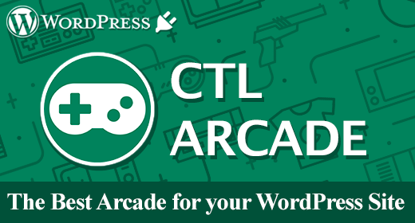

<!DOCTYPE HTML PUBLIC "-//W3C//DTD HTML 4.01//EN" "http://www.w3.org/TR/html4/strict.dtd">
<head lang="en">
	<meta http-equiv="content-type" content="text/html;charset=utf-8">
	<title>Craps</title>
	<!-- Framework CSS -->
	<link rel="stylesheet" href="assets/blueprint-css/screen.css" type="text/css" media="screen, projection">
	<link rel="stylesheet" href="assets/blueprint-css/print.css" type="text/css" media="print">
	<link href="styles/shCore.css" rel="stylesheet" type="text/css" >
	<link href="styles/shCoreDefault.css" rel="stylesheet" type="text/css" >
	<link href="styles/shThemeDefault.css" rel="stylesheet" type="text/css" >
	
	<!--[if lt IE 8]><link rel="stylesheet" href="assets/blueprint-css/ie.css" type="text/css" media="screen, projection"><![endif]-->
	<link rel="stylesheet" href="assets/blueprint-css/plugins/fancy-type/screen.css" type="text/css" media="screen, projection">
	<style type="text/css" media="screen">
		p, table, hr, .box { margin-bottom:25px; }
		.box p { margin-bottom:10px; }
	</style>
	
	<script type="text/javascript" src="scripts/shCore.js"></script>
	<script type="text/javascript" src="scripts/shBrushJScript.js"></script>
	<script type="text/javascript" src="scripts/shBrushXml.js"></script>
</head>


<body>
	<div class="container">
	
		<h3 class="center alt">&ldquo;Craps&rdquo; Documentation by &ldquo;Code This Lab S.r.l.&rdquo; v1.0</h3>
		
		<hr>
		
		<h1 class="center">&ldquo;Craps&rdquo;</h1>
		
		<div class="borderTop">
			<div class="span-6 colborder info prepend-1">
				<p class="prepend-top">
					<strong>
					Created: 05/09/2016<br>
					By: <a href="http://www.codethislab.com" target="_blank">Code This Lab S.r.l.</a><br>
					Email: <a href="mailto:info@codethislab.com">info@codethislab.com</a>
					</strong>
				</p>
			</div><!-- end div .span-6 -->		
	
			<div class="span-12 last">
				<p class="prepend-top append-0">Thank you for purchasing our game. If you have any questions that are beyond the scope of this help file, please feel free to email via user page contact form <a href="http://codecanyon.net/user/codethislab?ref=codethislab">here</a>. Thanks so much!</p>
			</div>
		</div><!-- end div .borderTop -->
		
		<hr>
		
		<h2 id="toc" class="alt">Table of Contents</h2>
		<ol class="alpha">
			<li><a href="#desc">Description</a></li>
			<li><a href="#start">Getting Started</a></li>
			<li><a href="#content">Folder Contents</a></li>
			<li><a href="#win_occurrence">Set Win Occurrence</a></li>
			<li><a href="#htmlStructure">HTML Structure</a></li>
			<li><a href="#cssFiles">CSS Files and Structure</a></li>
			<li><a href="#javascript">JavaScript</a></li>
			<li><a href="#game_function">Game functions</a></li>
			<li><a href="#change_graphics">Change Graphic</a></li>
			<li><a href="#disable_sound">Enable Sounds</a></li>
			<li><a href="#wp">Wordpress Plugin</a></li>
		</ol>
		
		<hr>
		
		<h3 id="desc"><strong>A) Description</strong> - <a href="#toc">top</a></h3>
		<p>Craps is a HTML5 casino game. Try your luck with this stylish 3D version of Craps Casino Game! <br>
		    The game contains all the main craps game features like hardways and horn bets.
			The ZIP package contains the game with 1280x768 resolution that scales to fit the whole screen device<br>
			Just warning that for very wide screens, the game may not be perfectly full screen.
			The game is fully compatible with all most common mobile devices.<br>
			Sounds are enabled for mobile but we can't grant full audio compatibility on all mobile devices due to some well-know issue between some mobile-browser and HTML5.
			So if you want to avoid sound loading, please read <a href="#disable_sound">Enable Sound</a> section). <br>
			<strong>WARNING:</strong> Sounds can't be enabled for Windows Phone as this kind of device have unsolved issues with 'audio' and 'video' tag.
		</p>
		
		<hr>
		<h3 id="content"><strong>B) Folder Contents</strong> - <a href="#toc">top</a></h3>
		<p>
			The item package contains the following folders:
			<ul>
			<li><strong>ctl_arcade_wp_plugin</strong>:<br> This folder contains the game version (zip file inside) that can be used with wordpress plugin <a href="https://codecanyon.net/item/ctl-arcade-wordpress-plugin/13856421">CTL Arcade</a><br/><br/></li>
			<li><strong>game</strong>:<br> This folder contains the full source code that you can edit as you need.<br/><br/></li>
			<li><strong>live_demo</strong>:<br>This folder contains the obfuscated version of the game. <strong>WARNING</strong>: you should use this version if you don't have to edit the original game.<br/><br/></li>
			<li><strong>readme</strong>:<br>This folder contains the readme of the game.
			</ul>
		</p>
		<hr>
		
		<h3 id="start"><strong>C) Getting Started</strong> - <a href="#toc">top</a></h3>
			<p>To install the game just upload on your server the game folder live_demo.  WARNING: The game won't run LOCALLY with some browser like Chrome due to some security restrictions. To let it work correctly you have to upload it online.
			
			<ul>
				<li><strong>Game Resize:</strong> All game resolution automatically center itself and fits the screen thanks to the <strong>ctl_utils.js</strong> file. 
				If you want to avoid this, comment this function in index.html: </li>
				<pre class="brush: js">
					$(window).ready(function() {
						/*
						if(isIOS()){
							 setTimeout(function(){sizeHandler();},200);
						 }else{
							 sizeHandler();
						 }
						 */
					});
				</pre>
				
				<li><strong>Save Score:</strong> if you need to call your php function for saving score each time dices are rolled, you can add it in the <strong>index.html</strong> file:
					<pre class="brush: js">
						$(document).ready(function(){
							var oMain = new CMain();
							
							$(oMain).on("save_score", function(evt,iMoney) {
								//alert("iMoney: "+iMoney );
							});
						});
					</pre>
				</li>
				<li> <strong>Localization:</strong> You can easily change game text for different languages, changing string in <strong>CLang.js</strong></li>
				
				<pre class="brush: js">
					var TEXT_MONEY     = "MONEY";
					var TEXT_CUR_BET   = "CUR BET";
					var TEXT_MIN_BET   = "MIN BET";
					var TEXT_MAX_BET   = "MAX BET";
					var TEXT_ROLL      = "ROLL";
					var TEXT_EXIT      = "EXIT";
					var TEXT_RECHARGE  = "RECHARGE";
					var TEXT_YOU_WIN   = "GREAT!! YOU WIN";
					var TEXT_CURRENCY  = "$";
					var TEXT_ARE_SURE  = "ARE YOU SURE?";
					var TEXT_COME_OUT  = "COME OUT";

					var TEXT_ERROR_NO_MONEY_MSG="NOT ENOUGH MONEY FOR THIS BET!!";
					var TEXT_ERROR_MAX_BET_REACHED="MAX BET REACHED!!";
					var TEXT_ERROR_MIN_BET = "YOU BET IS LOWER THAN MINIMUM BET!!";
					var TEXT_NO_MONEY = "YOU DON'T HAVE ENOUGH MONEY!!!";
					var TEXT_RECHARGE_MSG = "PLEASE CLICK RECHARGE BUTTON TO PLAY AGAIN";
					var TEXT_WAITING_BET = "WAITING FOR YOUR BET...";
					var TEXT_READY_TO_ROLL = "ROLL WHEN YOU'RE READY!";

					var TEXT_HELP_MSG = new Array();
					TEXT_HELP_MSG["pass_line"] = "PLACE YOUR BET ON PASS LINE";
					TEXT_HELP_MSG["dont_pass1"] = "PLACE YOUR BET ON DON'T PASS";
					TEXT_HELP_MSG["dont_pass2"] = "PLACE YOUR BET ON DON'T PASS";
					TEXT_HELP_MSG["dont_come"] = "PLACE YOUR BET ON DON'T COME";
					TEXT_HELP_MSG["come"] = "PLACE YOUR BET ON COME";
					TEXT_HELP_MSG["field"] = "PLACE YOUR BET ON FIELD";
					TEXT_HELP_MSG["big_6"] = "PLACE YOUR BET ON BIG 6";
					TEXT_HELP_MSG["big_8"] = "PLACE YOUR BET ON BIG 8";

					var aValues = [4,5,6,8,9,10];
					var aInfosLay = ["1:2 ON 7 BEFORE POINT LESS 5% OF WIN",
									 "2:3 ON 7 BEFORE POINT LESS 5% OF WIN",
									 "5:6 ON 7 BEFORE POINT LESS 5% OF WIN",
									 "5:6 ON 7 BEFORE POINT LESS 5% OF WIN",
									 "2:3 ON 7 BEFORE POINT LESS 5% OF WIN",
									 "1:2 ON 7 BEFORE POINT LESS 5% OF WIN"];
					var aInfosLose = ["5:11 ON 7 BEFORE POINT",
									  "5:8 ON 7 BEFORE POINT",
									  "4:5 ON 7 BEFORE POINT",
									  "4:5 ON 7 BEFORE POINT",
									  "5:8 ON 7 BEFORE POINT",
									  "5:11 ON 7 BEFORE POINT"];
					var aInfosBuy = ["2:1 ON MAKING POINT LESS 5% OF BET",
									 "3:2 ON MAKING POINT LESS 5% OF BET",
									 "6:5 ON MAKING POINT LESS 5% OF BET",
									 "6:5 ON MAKING POINT LESS 5% OF BET",
									 "3:2 ON MAKING POINT LESS 5% OF BET",
									 "2:1 ON MAKING POINT LESS 5% OF BET"];
					var aInfosWin = ["9:5 ON MAKING POINT",
									 "7:5 ON MAKING POINT",
									 "7:6 ON MAKING POINT",
									 "7:6 ON MAKING POINT",
									 "7:5 ON MAKING POINT",
									 "9:5 ON MAKING POINT"];
					for(var i=0;i<aValues.length;i++){
						TEXT_HELP_MSG["lay_bet"+aValues[i]] = "PLACE YOUR BET ON LAY "+aValues[i] + " - " + aInfosLay[i];
						TEXT_HELP_MSG["lose_bet"+aValues[i]] = "PLACE YOUR BET ON LOSE "+aValues[i]+ " - " + aInfosLose[i];
						TEXT_HELP_MSG["number"+aValues[i]] = "PLACE YOUR BET ON BUY "+aValues[i]+ " - " + aInfosBuy[i];
						TEXT_HELP_MSG["win_bet"+aValues[i]] = "PLACE YOUR BET ON WIN "+aValues[i]+ " - " + aInfosWin[i];
					}

					for(var j=0;j<8;j++){
						TEXT_HELP_MSG["any11_"+j] = "PLACE YOUR BET ON HORN 11";
						TEXT_HELP_MSG["any_craps_"+j] = "PLACE YOUR BET ON ANY CRAPS";
					}

					TEXT_HELP_MSG["seven_bet"] = "PLACE YOUR BET ON ANY 7";
					TEXT_HELP_MSG["hardway6"] = "PLACE YOUR BET ON HARDWAY 6";
					TEXT_HELP_MSG["hardway10"] = "PLACE YOUR BET ON HARDWAY 10"; 
					TEXT_HELP_MSG["hardway8"] = "PLACE YOUR BET ON HARDWAY 8";
					TEXT_HELP_MSG["hardway4"] = "PLACE YOUR BET ON HARDWAY 4";
					TEXT_HELP_MSG["horn3"] = "PLACE YOUR BET ON HORN 3";
					TEXT_HELP_MSG["horn2"] = "PLACE YOUR BET ON HORN 2";
					TEXT_HELP_MSG["horn12"] = "PLACE YOUR BET ON HORN 12";

					var TEXT_CREDITS_DEVELOPED = "DEVELOPED BY";
					var TEXT_LINK = "WWW.CODETHISLAB.COM";

					var TEXT_CONGRATULATIONS = "Congratulations!";
					var TEXT_SHARE_1 = "You collected <strong>";
					var TEXT_SHARE_2 = " points</strong>!<br><br>Share your score with your friends!";
					var TEXT_SHARE_3 = "My score is ";
					var TEXT_SHARE_4 = " points! Can you do better?";				
					</pre>
				
				<li><strong>Game option:</strong> You can easily customize game setting when creating a new instance of the game in <strong>index.html</strong> file</li>
				<pre class="brush: js">
					var oMain = new CMain({
                                    money: 1000,        //STARING CREDIT FOR THE USER
									min_bet: 1,       //MINIMUM BET
									max_bet: 1000,      //MAXIMUM BET   
									win_occurrence: 30,//Win occurrence percentage (100 = always win). 
									time_show_dice_result: 3000, //TIME IN MILLISECONDS OF DICE RESULT SHOWING.                    
									casino_cash:400,   //The starting casino cash that is recharged by the money lost by the user
									num_hand_before_ads:10    //NUMBER OF DICE ROLLING TO COMPLETE, BEFORE TRIGGERING SAVE_SCORE EVENT. USEFUL FOR INTER-LEVEL AD EVENTUALLY.
									//
                                    //// THIS FUNCTIONALITY IS ACTIVATED ONLY WITH CTL ARCADE PLUGIN.///////////////////////////
                                    /////////////////// YOU CAN GET IT AT: /////////////////////////////////////////////////////////
                                    // http://codecanyon.net/item/ctl-arcade-wordpress-plugin/13856421 ///////////
                                });
				</pre>
			</ul>
			</p>
		<hr>
		
		<h3 id="win_occurrence"><strong>D) Set Win Occurrence</strong> - <a href="#toc">top</a></h3>
			<p>
				You can set the win occurrence percentage, editing the parameter 'win_occurrence' in index.html. Set a value between 0 and 100. <br>
				<br><br>
				The win occurrence is strictly related to the 'casino_cash' parameter, that is the amount of money that the casino table currently have. So if the casino money are less than the
				current player bet, the player can't win because the game doesn't have enough money.
			</p>
		<hr>
		
		<h3 id="htmlStructure"><strong>E) HTML Structure</strong> - <a href="#toc">top</a></h3>
		<p>This game have the canvas tag in the body. The ready event into the body calls the main function of the game: CMain(). 
		<br>The head section declares all the javascript functions of the game. The whole project uses a typical object-oriented approach.<br> 
		In the init function there are 6 mapped <a href="#events">events</a> that can be useful eventually for stats</p>
		
		<pre class="brush: js">
			<body  ondragstart="return false;" ondrop="return false;" >
				  <script>
				   $(document).ready(function(){
							 var oMain = new CMain();
							
							 $(oMain).on("recharge", function(evt) {
									 //alert("recharge");
							 });
							 
							 $(oMain).on("start_session", function(evt) {
									//THIS EVENT IS TRIGGERED WHEN PLAY BUTTON IN MENU SCREEN IS CLICKED
							 });
							 
							 $(oMain).on("end_session", function(evt) {
									//THIS EVENT IS TRIGGERED WHEN GAME IS OVER OR THE EXIT BUTTON IS CLICKED.
							 });
							 
							 $(oMain).on("save_score", function(evt,iScore) {
									//THIS EVENT IS TRIGGERED AFTER EACH DICE ROLLING. IT CAN BE USEFUL TO CALL PHP SCRIPTS (NOT PROVIDED IN THE PACKAGE) THAT SAVE THE SCORE.
							 });
							 
							 $(oMain).on("show_interlevel_ad", function(evt) {
									//THIS EVENT IS TRIGGERED WHEN N DICE ROLLING ARE EXECUTED. MAY BE USEFUL TO CALL ADS SCRIPT. 
							 });
							 
							 $(oMain).on("share_event", function(evt,iScore) {
									//THIS EVENT IS TRIGGERED WHEN USER EXIT FROM THE GAME. CAN BE USEFUL TO CALL SHARING FEATURE SCRIPTS.
							 });
				   });
						
				  </script>
				  
				<canvas id="canvas" class='ani_hack' width="1280" height="768"> </canvas>
			</body>
		</pre>
		
		<hr>

		<h3 id="cssFiles"><strong>F) CSS Files and Structure</strong> - <a href="#toc">top</a></h3>

		<p>The game use two CSS files. The first one is a generic reset file. Many browser interpret the default behavior of html elements differently. By using a general reset CSS file, we can work round this. 
		Keep in mind, that these values might be overridden somewhere else in the file.</p> 

		<p>The second file contains all of the specific stylings for the canvas and some hack to be fully compatible with all most popular mobile devices</p>  

		<hr>
		
		<h3 id="javascript"><strong>G) JavaScript</strong> - <a href="#toc">top</a></h3>
		
		<p>This game contains:</p>
		
		<ol>
			<li>jQuery</li>
			<li>Our custom scripts</li>
			<li>CreateJs plugin</li>
		</ol>
		  
		<ol>
			<li>jQuery is a Javascript library that greatly reduces the amount of code that you must write.</li>
			<li>The game have the following js files:
	
			<ul>
				<li>CMain: the main class called by the index file. <br>This file controls the sprite_lib.js file that manages the sprite loading, the loop game and initialize the canvas with the CreateJs library</li>
				<li>ctl_utils: this file manages the canvas resize and its centering</li>
				<li>sprite_lib: this class loads all images declared in the main class</li>
				<li>settings: general game settings</li>
				<li>CLang: global string variables for language localization</li>
				<li>CPreloader: simple text preloader to show resources loading progress</li>
				<li>CMenu: simple menu with play button</li>
				<li>CGfxButton: this class create a standard button</li>
				<li>CTextButton: this class create a standard text button</li>
				<li>CGame: this class manages the game logic</li>
				<li>CInterface: this class controls game GUI that contains text and buttons</li>
				<li>CGameOver: this class controls the game over panel that appears when player lose all the lives</li>
				<li>CBetTableButton: this class manages the table hit area</li>
				<li>CEnlight: this class manages the sprites that enlight bets on table</li>
				<li>CFiche: this class manages the fiche sprite</li>
				<li>CFicheBut: the buttons on table to select the fiche</li>
				<li>CFichesController: this class manages the fiches on table</li>
				<li>CMsgBox: this class manages the message box that appear for warning</li>
				<li>CGameSettings: this class contains all the info about dice rolling frames, fiche values, etc..</li>
				<li>CSeat: this class manages some user info like money, current bet, etc...</li>
				<li>CTableController: this class manages all table bet button</li>
				<li>CTweenController: this class manages the fiches tweening</li>
				<li>CDicesAnim: this class manages the 3D dice rolling animation</li>
				<li>CAreYouSurePanel: this class manages the panel that pop up when user click on exit button.</li>
				<li>CCreditsPanel: this class manages the credits panel into menu screen</li>
				<li>CDicesTopDownView: this class manages small panel that shows the dice result in a windon on the top-right corner</li>
				<li>CPuck: this class manages the puck that is used to assign eventually a number after dice rolling.</li>
			</ul>

			</li>
			<li>CreateJs is a suite of modular libraries and tools which work together to enable rich interactive content on open web technologies via HTML5.
			</li>
		</ol>
		
		<p>Resuming, the complete game flow is the following: </p>
		<ol>
			<li>The index.html file calls the CMain.js file after ready event is called</li>
			<li>The main class calls CPreloader.js to init preloader text and start sprite loading</li>
			<li>When all sprites contained in "/sprites" folder are loaded, the main class removes the preloader and calls the CMenu.js file that shows the main menu</li>
			<li>If user click on the play button in main menu, the CGame.js class is called and the game starts</li>
			<li>The User can start the game, clicking one of the chips on table</li>
			<li>If user click on the exit button in the up-right corner, the game returns to the menu screen</li>	
		</ol>		
		
		<hr>
		
		<h3 id="game_function"><strong>H) Game functions</strong> - <a href="#toc">top</a></h3>
			In this section will be explained all the most important functions used in <strong>CGame.js</strong> file. <br><br>
		
		<ul>
			<li><strong>_init()</strong> <br>
				This function attach on the canvas some game sprites like background (oBg), GUI and initialize Table Controller, Fiche Controller and other panels.
			</li>
			<li><strong>unload()</strong> <br>
				This function removes all images from canvas and event listeners on buttons. It's called when user decide to exit from the game.
			</li>
			<li><strong>_generateWinLoss()</strong> <br>
				This function choose randomically if the user should win or lose after dice rolling.
			</li>
			<li><strong>dicesAnimEnded()</strong> <br>
				This function is called when dice rolling is executed.
			</li>
			<li><strong>onRoll()</strong> <br>
				This function is called when user click roll button.
			</li>
			<li><strong>_onShowBetOnTable()</strong> <br>
				This function shows the chips on the table.
			</li>
			<li><strong>update()</strong> <br>
				This function manages the main game loop.
			</li>
			
		</ul>
		
		<hr>
		
		<h3 id="change_graphics"><strong>I) Change Graphic</strong> - <a href="#toc">top</a></h3>
		<p>
			You can easily change all the game graphic, replacing all the file you need in the "/sprites" folder. Just respect file format (.png or .jpg) and size if you don't want to change any code line.<br>
		</p>

		<h3 id="disable_sound"><strong>J) Disable Sounds</strong> - <a href="#toc">top</a></h3>
		<p>If you want to disable all the sounds for mobile devices, you have to change the following value in settings.js file:</p>
			<pre class="brush: js">var DISABLE_SOUND_MOBILE = true;</pre>
		
		<br><br>
		
		<h3 id="wp"><strong>K) Wordpress Plugin</strong> - <a href="#toc">top</a></h3>
		<p><a href="http://codecanyon.net/item/ctl-arcade-wordpress-plugin/13856421?ref=codethislab">CTL Arcade</a> will allow you to add a real arcade on your worpress website, in this way your users will be more involved and will stay connected longer.<br><br>
			It's possible to add Ads banner at the beginning of each game and at the end of each level. This will give you a new tool to increase your revenues.<br><br>
			Your own users will promote your website sharing their scores on the main Social Networks, with no extra costs for you.<br><br>
			You'll get by default the score-sharing on Twitter. To add Facebook just follow the guideline below.<br><br>
			3 widgets can be added in your pages through a shortcode.<br>
			<ul>
				<li><strong>Game iframe</strong></li>
				<li><strong>Rate the Game</strong></li>
				<li><strong>Leaderboard</strong></li>
			</ul>
			Minimum Requirements:<br><br>
			<ul>
				<li><strong>PHP 4.3</strong></li>
				<li><strong>WordPress 4.3.1</strong></li>
				<li><strong>HTML5</strong></li>
				<li><strong>Canvas</strong></li>
				<li><strong>Javascript / jQuery</strong></li>
			</ul>
			
			<strong>This plugin is designed to work only with games built by Code This Lab.</strong>
			<br><br>
			You can find it <a href="http://codecanyon.net/item/ctl-arcade-wordpress-plugin/13856421?ref=codethislab">here!</a> 
			
		</p>
		<a href="http://codecanyon.net/item/ctl-arcade-wordpress-plugin/13856421?ref=codethislab">
			
		</a>
		
		<br><br>
		
		<p>Once again, thank you so much for purchasing this game. Fell free to contact us if you have any questions or issue relating to this game. No guarantees, but we'll do our best to assist.</p> 
		
		<p class="append-bottom alt large"><a href="http://www.codethislab.com" target="_blank"><strong>CODE THIS LAB S.R.L.</strong></a></p>
		<p><a href="#toc">Go To Table of Contents</a></p>
		
		<hr class="space">
	</div>
	<!-- end div .container -->

	<!-- Finally, to actually run the highlighter, you need to include this JS on your page -->
	<script type="text/javascript">
		 SyntaxHighlighter.all()
	</script>
</body>
</html>